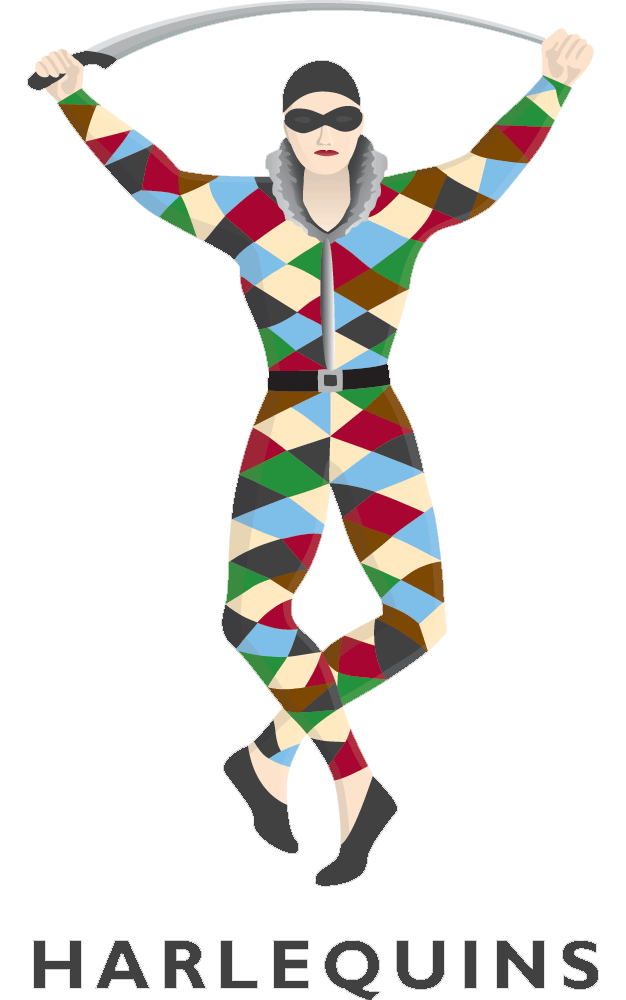

There are several plays involved, if viewing or playing rugby. Rucks,Mauls,Scrums, and normal plays are what most people should be interested in. A ruck is when a player gets tackled by an opposing team member. When the player is tackled he forms a gate. This means opposing players must step over and not from the sides of his body. The opposing team pushes the other team off the ball. The other team is allowed to defend and push the opposite way.
